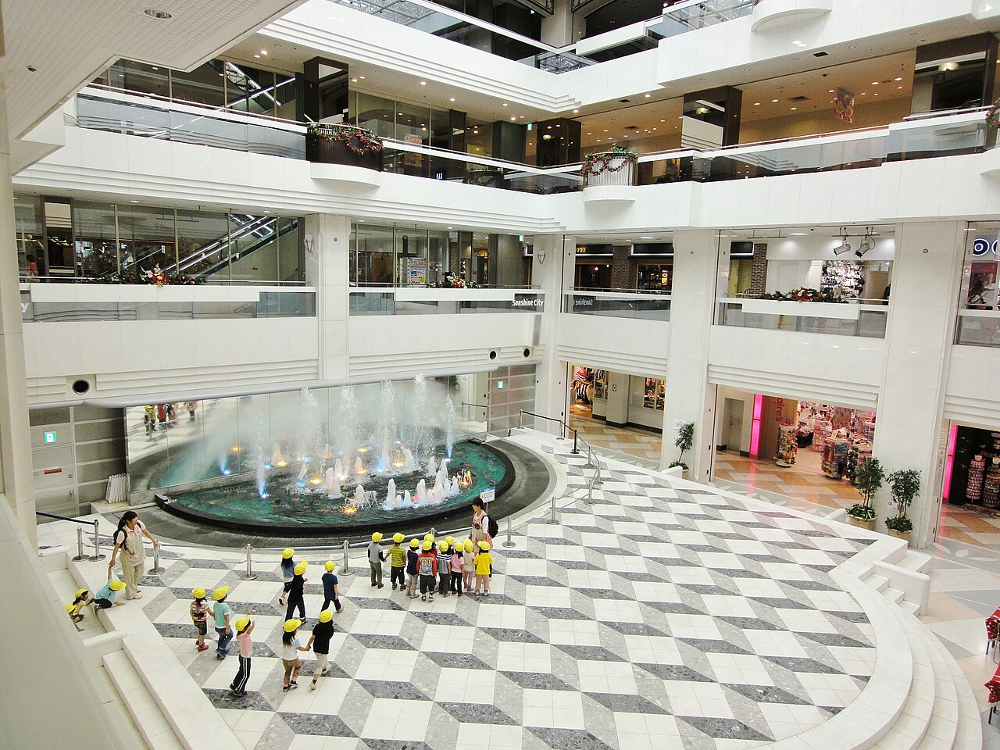
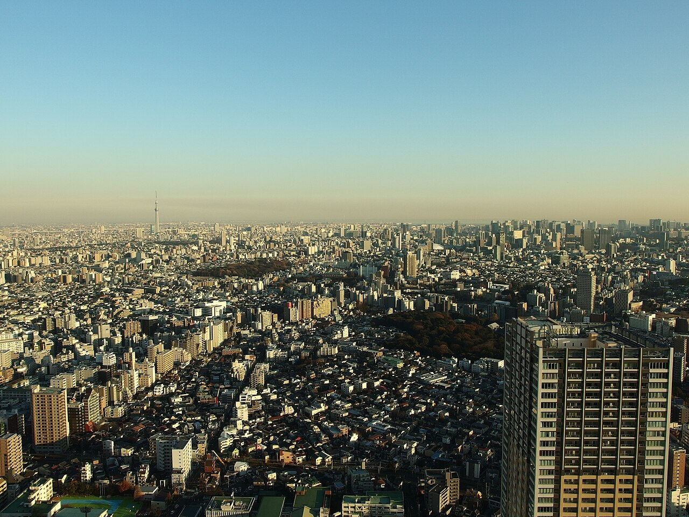
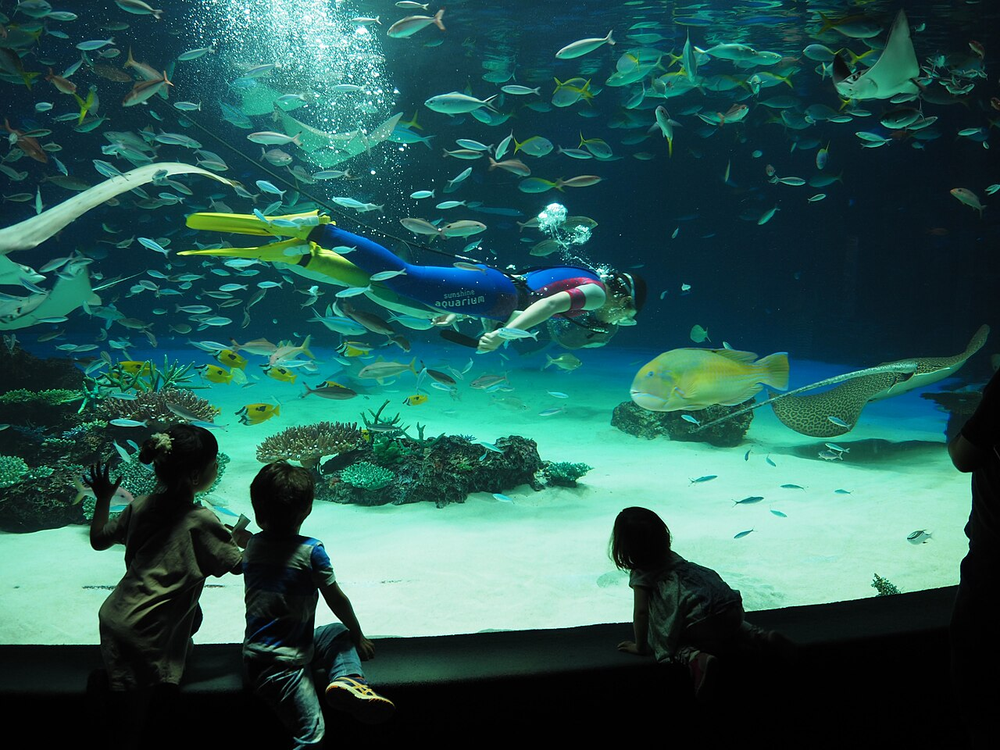

One complex holding an observatory, a rooftop aquarium, a planetarium, and an indoor amusement park, a few minutes from the anime shops. Nothing here needs booking ahead, which is the whole point of this day.



Sixty floors up over north Tokyo, 700 to 1,200 yen depending on the day, open to 21:00. Good sunset.
On the roof, with an outdoor lagoon where the sea lions swim in a tank above your head.
Immersive dome shows on a rotating schedule, in the same complex.
Namco's small indoor park: mini attractions, a retro haunted alley, and floors of themed food stalls.
Shops and restaurants through the complex, open late, all indoors and air-conditioned.